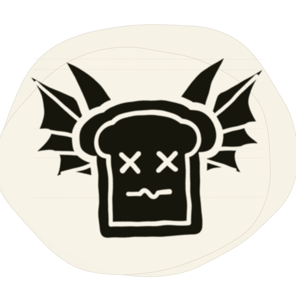

Coma Toast · Printful all-over print
The school-desk all-over print with Raising Hell on the left chest. Everything else on the shirt is pen, pencil and carving. The logo is drawn in thick black marker over its own dab of white-out, so it’s the one deliberate mark on a desk full of scribbles and stands out while still looking hand-drawn.

Every desk panel is oversized on purpose (24 in wide at 150 dpi) so Printful can crop it to the shirt with no gaps at the seams. I couldn’t reach Printful’s template from here, so check each placement in their preview before ordering.
| File | Size | Use for |
|---|---|---|
front.jpg | 3600 × 4800 | Front placement (no logo). Add the logo patch on top in Printful. |
raising-hell-patch.png | 2400 × 2400, transparent | The logo layer. Size it about 3.5 to 4 in wide on the wearer’s left chest. |
front-with-logo.jpg | 3600 × 4800 | One-file option: front with the logo already placed at my best estimate of the left chest. |
back.jpg | 3600 × 4800 | Back placement (different graffiti from the front). |
sleeve-left.jpg, sleeve-right.jpg | 3600 × 2400 | Sleeve placements. |
front.jpg to the front, back.jpg to the back, and the sleeve files to each sleeve. Set each to fill its area.raising-hell-patch.png as a second layer. Place it on the wearer’s left chest (your right as you look at the shirt), about 3.5 to 4 in wide.